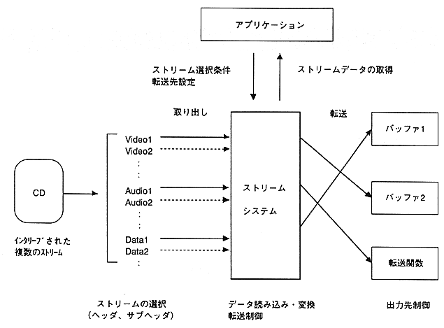

Stream stream system can handle multiple interleaved streams as logically standing data. Each stream is distinguished by a subheader.
Stream system performs the transfer process when the application calls the server function. If you register a transfer function, the server function calls the transfer function instead of transferring to the buffer. The application can transfer data while converting it using the registered transfer function.